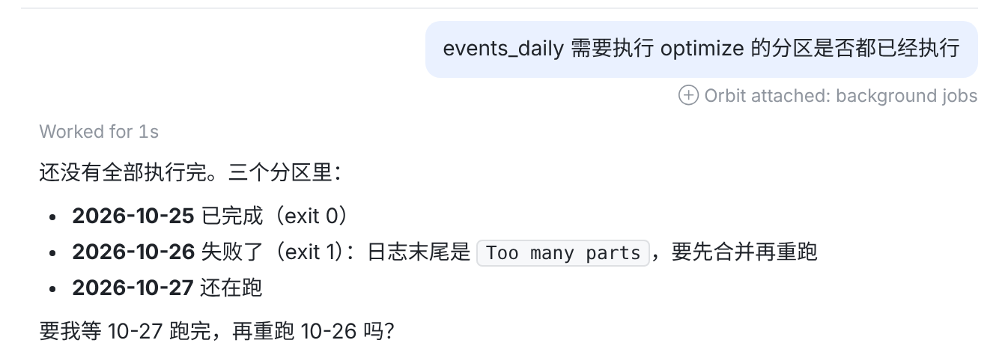
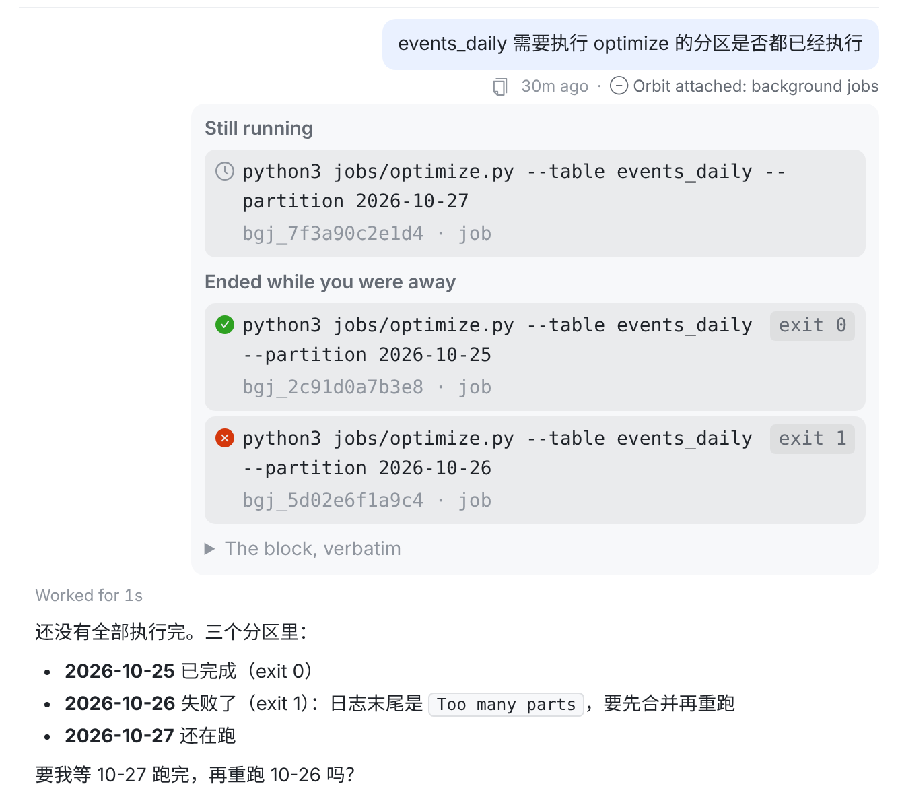
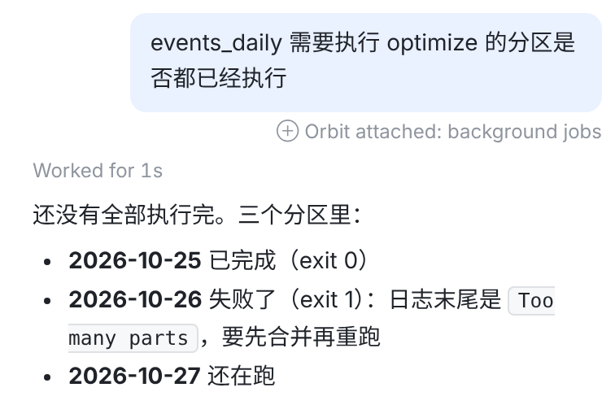
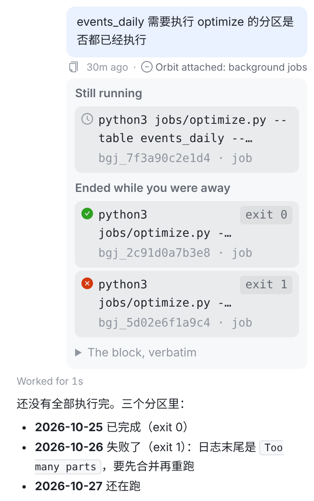
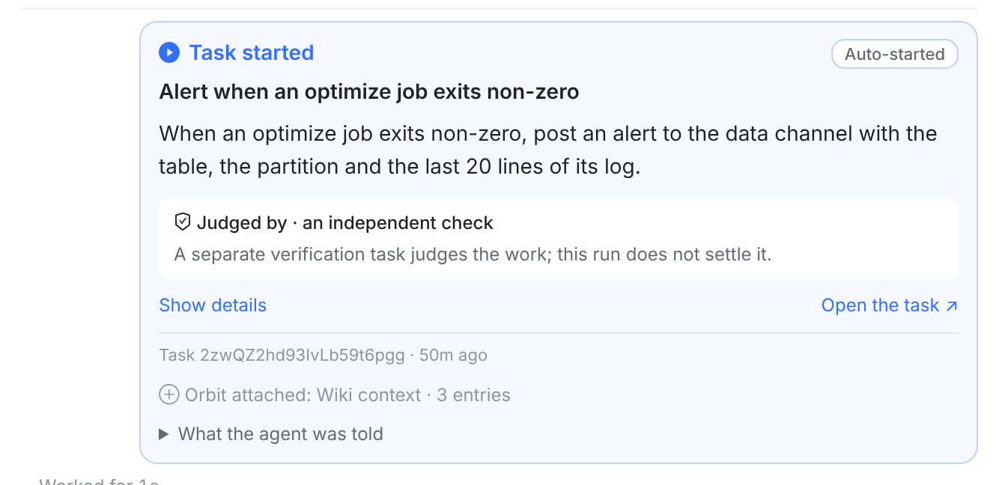

按你定的：不带数字；点开后加号变减号。下面全是本分支 Web 的真实页面。和第二版图上不一样的只有一处：这行灰字并进了气泡下面那一行（⧉ 时间 · 状态 · 这行），因为今天另一个改动（user-bubble-foot-row）刚把气泡下面的小字定成一行，再单独起一行就又是两行灰字了。

121 气泡里只有你的话（208 → 38px）。2 气泡下面一行灰字 ⊕ Orbit attached: background jobs，和时间同字号同灰度；数字在悬停提示里。

343 加号变减号：⊖ Orbit attached: background jobs；鼠标停着时左边出现 ⧉ 和时间（和平时一样）。4 内容在这行下面展开，气泡不动；再点收起。



卡片（任务开始、唤醒行、别的会话发来的消息）里还是卡底一行灰字，点开在卡里展开。手机上那一行不折行：太长时往左边的空白里伸。
Transcript.tsx（useControlPlaneNote 把「那一行」和「展开的内容」分开交出去，气泡把它们分开放；卡片里用 ControlPlaneNote 放一起）、index.css（卡片那套删掉）。全量 Web 测试 5682 条全过；改了 13 条钉旧卡片/旧位置的测试。AttachedNoteEntry 拆成 AttachedNoteLine + AttachedNoteBody；UserBubbleView 把这一行放进气泡下面那一行的末尾，展开的内容放在它下面。OrbitKit 4077 条全过（5 条在 Linux 上恒跳过）；Mac CI（run 40531763711）macOS 编译+测试、iOS 编译都通过。AttachedNoteCard → AttachedNoteEntry，同样一行灰字，放在你那一行的最后。合并检查（test lintDebug assembleDebug）通过：3964 条测试全过，lint 无错误；设备测试改了断言、编译通过，没在模拟器上跑。